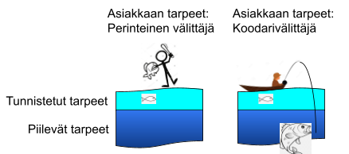
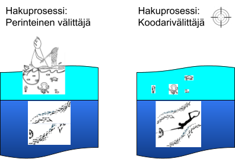

Koodareita välittävä koodari kasvuhakuisille yrityksille
Suomen ainoa freelancer-konsulttien välitysfirma, jossa välittäjät ovat ohjelmistokehityksen ammattilaisia.
Koska olemme itsekin koodareita, pystymme tunnistamaan projektisi piilevätkin tarpeet ja löytämään juuri sinun projektiisi motivoituneen ja lahjakkaan freelancerin.
- Välittäjä, joka on koodari
- Löydämme projektisi piilotarpeet
- Juuri sinun projektiin motivoitunut freelancer
Hyödyt
Suora yhteys Suomen ainoaan välittäjään joka on ohjelmistokehityksen ammattilainen
Myyntimiesten sijaan meillä on töissä ohjelmistokehityksen ammattilaisia.
Teknisen taustamme ansiosta kuromme umpeen asiakkaan ja freelancereiden väliin jäävän kuilun. Varmistamme, että freelancer ymmärtää projektin tarpeet heti, mikä poistaa ylimääräiset palaverit ja sujuvoittaa prosessia.
Saat suoran yhteyden asiantuntijaan, jolla on yli 10 vuoden kokemus ja laaja verkosto käytettävissään - Saat kaiken samalta tiskiltä ilman tarvetta ulkopuolisille teknisille asiantuntijoille.
Välittäjä, joka ymmärtää asiakkaan ja freelancerin tarpeet sekä motivaatiotekijät
Muut välittäjät eivät pysty samaan kuin me koska he eivät ymmärrä koodarien sielun elämää samalla tavalla kuin me koodareina pystymme.
Geneeriset CV:t ja pinnalliset teknologialistat eivät auta vanhanaikaista välittäjää, jolla ei ole kokemusta esim. monimutkaisten järjestelmien ohjelmoinnista, houkuttelemaan projektiin alan halutuimpia freelancereita.
Teemme heti prosessin alussa syvällisen kartoituksen sekä projektin teknisistä että motivaatiotekijöistä ja tuomme esiin sen uniikit ominaisuudet - Tämä mahdollistaa projektin esittelyn tavalla, joka resonoi freelancereiden kanssa.
Ei CV:n pläräystä vaan osaava ja motivoitunut freelancer nopeasti
Tunnistamme, että jokainen projekti ja asiakas on ainutlaatuinen ja sen vuoksi päätimme ylittää perinteisen välityksen arvolupauksen.
Muut välittäjät tekevät rikkinäistä CV-kauppaa ja jättävät freelancerin motivaation ja tavoitteiden seulonnan asiakkaan vastuulle - kun valitset freelancerin kauttamme, valitset henkilön, et pelkkää CV:tä.
Me tarjoamme avaimet käteen -ratkaisun: huolehdimme koko prosessista ja varmistamme, että työskentelet suoraan oikean freelancerin kanssa alusta alkaen.
Prosessi
-
Alkukartoitus koodarin toimesta syvälliseen ymmärtämiseen, jossa löydämme piilevätkin tarpeet
Emme halua olla kuten muut välittäjät, jotka tyytyvät pintapuolisiin tarpeiden kartoituksiin, vaan haluamme panostaa alkukartoitukseen - siksi meillä asiakkaan tarpeet selvittää ammattilaiskoodari.
Lopputuloksena saadaan tarkka selvitys asiakkaan yksilöllisille tarpeille, ei vain teknologialistaa.
Piilevien tarpeiden tunnistaminen heti prosessin alussa mahdollistaa sen, että projektissa päästään heti tekemään oikeita asioita - Näin pysytään sekä aikataulussa ja budjetissa.
-
Koodarivälittäjä etsii tarkka-ampujan tarkkuudella sopivan friikun
Vaikka perinteinen CV-kauppa voi satunnaisesti toimia, me emme tyydy vain CV-mätsiin tai paperilla olevaan vertailuun.
Me selvitämme molempien osapuolten todelliset tarpeet ja varmistamme, että valittu freelancer omaa paitsi taidot, myös motivaation ja linjassa olevan asenteen projektisi tavoitteiden kanssa.
Asiakkaana sinun ei tarvitse huolehtia mistään; me emme lähetä sinulle CV-nippua, vaan teemme kattavan kartoituksen sopivista kandidaateista. Näin voit keskittyä omiin töihisi ilman ylimääräistä vaivannäköä.
-
Yhteistyön aloitus käyttäen kevyitä ja joustavia sopimuksia
Kun mätsi on löytynyt, on jäljellä vain kevyet sopimukset, jonka jälkeen hommat voidaan aloittaa. Meidän mielestämme joustavuus tarkoittaa sitä, että sopimuksesta pääsee helposti eroon, jos tarve loppuu.
Lisäksi voit halutessasi jatkaa myöhemmin saman sopimuksen puitteissa ja saada tarvittaessa uusia osaajia vieläkin nopeammin ja vaivattomammin.
Maksat vain tuloksista - toimeksiannon tekeminen on täysin maksutonta ja helppoa kuin kahvin keitto.
Palvelut
Meidän friikut ovat enemmän kuin pelkkiä osaajia; he ovat ongelmanratkaisun mestareita, jotka ovat olleet avainrooleissa suurten suomalaisten yritysten projekteissa. He eivät vain tyydy siihen että projektisi onnistuu - he haluavat viedä sen seuraavalle tasolle.
Ohjelmistokehitys
Custom websites and web applications
Pilvipalvelut ja DevOps
Pilvipalvelut ja jatkuvan kehityksen käytännöt
Testiautomaatio
Seamless integration with third-party services
jne
Intuitive and visually appealing interfaces
Ota yhteyttä!
Meille voit pirauttaa tai meilata vaikka heti - kerro tarpeistasi, niin huomaat nopeasti miten erotumme muista välittäjistä teknisen osaamisemme ansiosta.
Henrik Raitasola
Koodarivälittäjä, ohjelmistokehittäjä
Puhelin: +358 40 063 7916
Sähköposti: henrik.raitasola@gmail.com